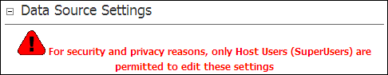

The following Red Warning Message is displayed to Page Editors and Administrators on the Reports Settings - Data Source Settings section on the Module Settings page of the Reports module:  For security and privacy reasons, only Host Users (SuperUsers) are permitted to edit these settings.
For security and privacy reasons, only Host Users (SuperUsers) are permitted to edit these settings.
This message informs users that only SuperUsers are able to edit the Data Source Settings of the Reports module.

Security warning message